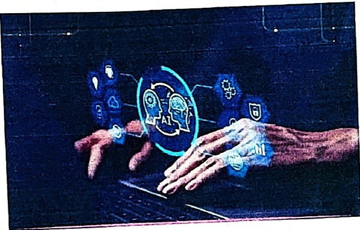
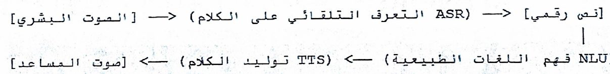
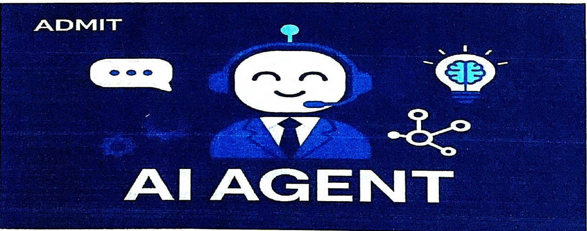

الذكاء الاصطناعي في الهواتف الذكيةThe Role of AI in Modern Smartphones
نظري · م02أقسام المحاضرة (7)
- دور الذكاء الاصطناعي في الهواتف الذكية الحديثةThe Role of AI in Modern Smartphones
- التصوير الحسابي المتقدمAdvanced Computational Photography
- إدارة الطاقة والأداء التكيفيAdaptive Performance & Power Management
- البنية التحتية لعتاد الـ NPUNPU (Neural Processing Unit) Hardware
- المساعدون الافتراضيون والبنية الهندسيةVirtual Assistants and Their Architecture
- ثورة الوكلاء الأذكياء المستقلينThe AI Agents Revolution
- أسئلة مقترحةSuggested Questions
دور الذكاء الاصطناعي في الهواتف الذكية الحديثةThe Role of AI in Modern Smartphones

شهدت تكنولوجيا الهواتف المحمولة خلال العقد الأخير تحولاً جذرياً غير مسبوق، حيث انتقلت هذه الأجهزة من كونها مجرد أدوات اتصال تقليدية تنفذ برمجيات خطية ثابتة القواعد، إلى منصات حوسبة إدراكية متكاملة تعتمد بشكل أساسي على خوارزميات الذكاء الاصطناعي (AI). يهدف هذا المساق إلى تفكيك المعمارية الهندسية والنظرية التي تمكن الهواتف الذكية الحديثة من الإدراك، والتعلم، والتكيف مع سلوكيات المستخدم البشري وبيئته المحيطة فورياً.
❖ مثال واقعي للتصوير الحسابي: عندما تلتقط صورة بهاتفك في مكان مظلم وخلفك إضاءة قوية (مثل غروب الشمس)، يقوم الهاتف بـ "دمج الإطارات". يأخذ لقطة سريعة جداً لإظهار تفاصيل الشمس، ولقطة بطيئة لإظهار تفاصيل وجهك في الظلام، ثم يدمجهما معاً في صورة واحدة مثالية خالية من التشويش
التصوير الحسابي المتقدمAdvanced Computational Photography
تقنيات الهواتف المحمولة المدعومة بالذكاء الاصطناعي
1.التصوير الحسابي المتقدم (Advanced Computational Photography): هو الثورة الحقيقية التي جعلت كاميرات الهواتف الذكية الصغيرة تُنافس كاميرات DSLR الاحترافية. في الهواتف الحديثة، لم يعد جودة الصور يعتمد فقط على حجم المستشعر أو العدسة الزجاجية، بل أصبح الاعتماد الأكبر على الخوارزميات البرمجية وقوة معالجة الذكاء الاصطناعي (NPU) التي تدمج وتُعدل البيانات الرقمية في جزء من الثانية لإنتاج الصورة النهائية.
إليك تفصيل لأبرز تقنيات وآليات عمل التصوير الحسابي المتقدم:
1. دمج الإطارات المتعددة (Multi-Frame Fusion)
هذه التقنية هي الأساس لكل ما تراه من جودة في هاتفك، وتتضمن:
التصوير بالمدى الديناميكي العالي المتطور (Advanced HDR): عند الضغط على زر التصوير، يلتقط الهاتف خفيةً من 3 إلى أكثر من 10 إطارات بسرعات غلق وتصحيحات إضاءة مختلفة (لقطات مظلمة، متوسطة، ومضيئة جداً)، ثم يدمج أفضل أجزاء من كل لقطة لإنتاج صورة غنية بالتفاصيل في الظلال والنقاط المضيئة في آن واحد.
الدمج الدلالي (Semantic Rendering): يتعرف الذكاء الاصطناعي على "عناصر" الصورة بشكل منفصل (السماء، العشب، بشرة الإنسان، الملابس). بناءً على هذا الفهم، يعالج كل عنصر بشكل مستقل؛ فيقوم بزيادة حدة تفاصيل العشب، وتنعيم البشرة بشكل طبيعي، وضبط زرقة السماء دون أن يؤثر تعديل عنصر على الآخر.
2. التصوير الليلي الفائق (Night Mode & Low-Light Fusion)
تقليل الضوضاء بالذكاء الاصطناعي (AI Noise Reduction): في الإضاءة المنخفضة، تلتقط الكاميرا لقطات متعددة بتعريض طويل. تقوم خوارزميات التعلم الآلي بمقارنة هذه الإطارات بكسل تلو الآخر لتمييز "التشويش الرقمي" (Noise) عن التفاصيل الحقيقية للمشهد وحذفه.
إعادة بناء الألوان المفقودة: تستخدم المعالجات الشبكات العصبية للتنبؤ بالألوان الحقيقية للأشياء في الظلام بناءً على ملايين الصور التي تدربت عليها، مما يمنحك صوراً ليلية ناصعة وقريبة من الواقع.
3. العزل الرقمي والعمق التكيفي (Portrait Mode & Depth Mapping)
خرائط العمق المعتمدة على التعلم الآلي: بدلاً من الاعتماد الكلي على عدستين متباعدتين لحساب العمق، تستطيع الكاميرات الحديثة (حتى بوجود عدسة واحدة) التعرف على حواف الأشخاص أو الأجسام بدقة متناهية (حتى خصلات الشعر المتطايرة) وفصلها عن الخلفية.
محاكاة العدسات الاحترافية (Bokeh Simulation): يقوم المعالج بتطبيق تأثير ضبابي (Blur) تدريجي على الخلفية؛ بحيث تزداد الضبابية كلما ابتعدت الأشياء عن نقطة التركيز، تماماً كما تفعل العدسات السينمائية ذات فتحات العدسة الواسعة (مثل f/1.2).
4. التكبير الرقمي الفائق (Super-Resolution Zoom)
عندما تقوم بالتكبير رقمياً، لا يقوم الهاتف بمجرد "قص" الصورة (Crop) مما يضيع دقتها، بل تستخدم ميزة Super Resolution خوارزميات الذكاء الاصطناعي لملء البكسلات المفقودة وإعادة رسم الحواف والنصوص لتبدو حادة وكأنها التُقطت بتقريب بصري حقيقي.
مقارنة : التصوير التقليدي ضد التصوير الحسابي
(وجه المقارنة · التصوير التقليدي (DSLR/Mirrorless) · التصوير الحسابي (الهواتف الذكية))
- • مصدر الجودة: التقليدي: مستشعرات ضخمة وعدسات زجاجية فيزيائية معقدة. · الحسابي: مستشعرات صغيرة مدعومة بمعالجة برمجية فائقة السرعة.
- • آلية اللقطة: التقليدي: إطار واحد حقيقي (Single Frame). · الحسابي: دمج إطارات متعددة (Multi-frame) ومعالجتها في الخلفية.
- • التعديل: التقليدي: يتطلب تصوير بصيغة RAW وتعديل يدوي لاحق (Post-processing). · الحسابي: تعديل فوري تلقائي (Real-time) في أجزاء من الثانية.
- • الوزن والعملية: التقليدي: معدات ثقيلة ومكلفة وغير عملية للتنقل اليومي. · الحسابي: جهاز جيب خفيف جاهز للتصوير الفوري في أي ظروف إضاءة.
إدارة الطاقة والأداء التكيفيAdaptive Performance & Power Management
2.إدارة الطاقة والأداء التكيفي
إدارة الطاقة والأداء التكيفي (Adaptive Performance & Power Management) هي العقل المدبر الصامت الذي يضمن عمل الهاتف الذكي بأقصى كفاءة ممكنة دون أن ينفد شحن البطارية أو ترتفع حرارة الجهاز. في الماضي، كانت الهواتف تعتمد على سيناريوهات ثابتة ومحددة مسبقاً (مثل تقليل إضاءة الشاشة بعد دقيقة)، أما اليوم، فتحلل خوارزميات التعلم الآلي سلوك المستخدم في الوقت الفعلي لاتخاذ قرارات ديناميكية ذكية.
❖ مثال واقعي لإدارة الطاقة: إذا اعتاد هاتفك أنك تفتح تطبيق "تويتر/إكس" يومياً الساعة 9 مساءً، فإنه يقوم بتهيئة التطبيق في الذاكرة بشكل خفي قبل دقيقة واحدة من هذا الموعد لتفتحه فوراً دون تعليق، بينما يقوم بإغلاق التطبيقات التي لم تستخدمها منذ الصباح لتوفير البطارية
تتحكم هذه الأنظمة التكيفية في الهواتف الحديثة من خلال أربعة محاور أساسية:
1. التخصيص التنبؤي للتطبيقات (Predictive Resource Allocation)
فهم عادات المستخدم: يتعلم الهاتف الأوقات اليومية التي تفتح فيها تطبيقات معينة. إذا كنت تفتح تطبيق الخرائط دائماً الساعة 8 صباحاً، يقوم النظام بتحضيره في الذاكرة العشوائية (RAM) مسبقاً ليعمل بسلاسة.
تجميد الخلفية الذكي: بدلاً من إغلاق كل التطبيقات في الخلفية، يحدد الذكاء الاصطناعي التطبيقات التي لن تستخدمها في الساعات القادمة ويضعها في وضع "السبات العميق" التام لتقليل استهلاك المعالج للبطارية.
2. جدولة المعالج الديناميكية (DVFS)
تضم المعالجات الحديثة (مثل Snapdragon أو Apple Silicon) أنواعاً مختلفة من النواة (نواة للأداء العالي ونواة موفرة للطاقة):
توزيع المهام الذكي: إذا كنت تقرأ مقالاً أو تتصفح بريدك، يوجه النظام هذه المهمة البسيطة إلى الأنوية الموفرة للطاقة.
الاستدعاء الفوري للقوة: بمجرد تشغيل لعبة ثقيلة ذات رسوميات معقدة أو البدء في معالجة فيديو، يرفع النظام الترددات فوراً وينقل العمل إلى الأنوية الفائقة الأداء لضمان عدم حدوث أي بطء (Lag).
3. الشحن التكيفي وصحة البطارية (Adaptive Charging)
لا يقتصر دور الذكاء الاصطناعي على تنظيم استهلاك الطاقة أثناء استخدام الهاتف فحسب، بل يمتد إلى إدارة عملية الشحن نفسها لحماية كيمياء البطارية:
تأخير الشحن الكامل: إذا قمت بتوصيل هاتفك بالشاحن أثناء النوم، سيتعلم الهاتف وقت استيقاظك المعتاد. سيقوم بشحن الهاتف سريعاً حتى 80%، ثم يوقف الشحن مؤقتاً، ولا يكمل الـ 20% المتبقية إلا قبيل استيقاظك بفترة وجيزة، مما يمنع بقاء البطارية تحت جهد كهربائي عالٍ لساعات طويلة ويطيل عمرها الافتراضي.
4. الإدارة الحرارية التكيفية (Thermal Throttling)
موازنة الحرارة ضد الأداء: عند معالجة مهام الذكاء الاصطناعي المعقدة محلياً على الجهاز، ترتفع حرارة الرقاقات بسرعة.
تعمل الخوارزميات على مراقبة الحساسات الحرارية والتنبؤ بالارتفاع قبل حدوثه، فتقوم بخفض أداء المعالج بنسب غير ملحوظة للمستخدم (Thermal Throttling) للحفاظ على برودة الهاتف وتجنب استنزاف الطاقة المفاجئ الناتج عن السخونة
❖ كيف تختلف الشركات في تطبيق هذا المفهوم؟
(الشركة ونظام التشغيل · التقنية الأساسية المعتمدة · طريقة العمل والتميز)
- • سامسونج (One UI): البطارية التكيفية (Adaptive Battery) · تدرس نمط استخدامك لمدد تصل إلى أسابيع، وتضع التطبيقات النادرة في وضع خمول صارم تلقائياً.
- • أبل (iOS): المحرك العصبي (Neural Engine) · دمج عميق جداً بين نظام التشغيل والعتاد، حيث يتم قفل الترددات وفتحها بدقة متناهية ميكروثانية بميكروثانية.
- • جوجل (Android/Pixel): معالجات Google Tensor · تعتمد بشكل كامل على التعلم الآلي على الجهاز لتوقع استخدامك للبطارية على مدار 24 ساعة وتعديل الأداء بناءً عليه.
البنية التحتية لعتاد الـ NPUNPU (Neural Processing Unit) Hardware
3. البنية التحتية لعتاد الـ NPU (Neural Processing Unit)
مفهوم الـ NPU: هي وحدات معالجة مخصصة تم تصميم معماريتها هندسياً لتسريع عمليات ضرب المصفوفات الرياضية والجمع المتراكم (MAC Operations)، وهي العمليات الحيوية التي تبنى عليها الشبكات العصبية الاصطناعية.
كفاءة الطاقة: مقارنة بمعالجات الرسوميات (GPU) والمعالجات المركزية (CPU)، تستطيع الـ NPU تنفيذ تريليونات العمليات في الثانية باستهلاك ضئيل جداً للطاقة، مما جعل الحوسبة المحلية على الجهاز أمراً ممكناً دون الحاجة لإرسال البيانات للخوادم السحابية.
المقارنة بين CPU وGPU وNPU هي مقارنة بين ثلاثة أنواع من العقول الذكية داخل هاتفك أو حاسوبك، حيث تم تصميم كل منها بهندسة ومعمارية مختلفة تماماً ليتفوق في نوع معين من المهام.
(وجه المقارنة · المعالج المركزي (CPU) · معالج الرسوميات (GPU) · وحدة المعالجة العصبية (NPU))
- • الوصف والتصميم: CPU: عالم رياضيات عبقري يحل أعقد المسائل المتسلسلة واحدة تلو الأخرى. · GPU: مجموعة مدربة من الرسامين ينجزون آلاف المهام البصرية البسيطة بالتوازي. · NPU: مصنع ضخم متخصص يحتوي على آلاف خطوط الإنتاج لضرب المصفوفات بسرعة فائقة.
- • طبيعة المعالجة: CPU: متسلسلة خطية (Sequential) · GPU: متوازية واسعة النطاق (Massive Parallel) · NPU: متوازية مخصصة للذكاء الاصطناعي (Dedicated Parallel)
- • عدد الأنوية (Cores): CPU: عدد قليل (من 4 إلى 24 نواة) ولكنها قوية جداً وسريعة. · GPU: عدد ضخم جداً (مئات أو آلاف الأنوية الصغيرة). · NPU: آلاف من محركات الضرب والتراكم (MAC Engines) والمصفوفات.
- • المهمة الرئيسية: CPU: إدارة نظام التشغيل، فتح التطبيقات، والتحكم بالهاتف ككل. · GPU: رندرة الرسوميات ثلاثية الأبعاد، الألعاب، والمؤثرات البصرية. · NPU: تسريع خوارزميات التعلم الآلي والذكاء الاصطناعي (توليد النصوص، التعرف على الوجه).
- • كفاءة الطاقة في الـ AI: CPU: منخفضة جداً (يستهلك طاقة هائلة وتسخن الرقاقة لو عالج مصفوفات). · GPU: متوسطة (قادر على المعالجة لكنه يستهلك طاقة عالية). · NPU: فائقة الارتفاع (مصمم فيزيائياً ليعالج ملايين العمليات بقطرات طاقة معدودة).
لكي تتخيل كيف تتكامل هذه الوحدات الثلاث، تخيل أنك تقوم بتشغيل لعبة ثقيلة تعتمد على توليد شخصيات بالذكاء الاصطناعي:
1. المعالج المركزي (CPU - Central Processing Unit)
دوره: هو "المدير العام". يتولى حساب فيزياء اللعبة (مثل حركة اللاعب، وحساب القوانين، وقراءة أزرار التحكم، وتحميل ملفات اللعبة من الذاكرة).
نقاط قوته: مرن جداً ويستطيع التعامل مع أي نوع من الأوامر البرمجية مهما كانت معقدة ومتغيرة.
2. معالج الرسوميات (GPU - Graphics Processing Unit)
دوره: يأخذ الأوامر من الـ CPU ويقوم "برسم" كل بكسل تراه على الشاشة. اللعبة تحتاج لعرض 60 أو 120 إطاراً في الثانية، والـ GPU يعالج حركة الإضاءة، والظلال، والألوان لكل بكسل في نفس اللحظة عبر أنويته المتعددة.
نقاط قوته: بارع جداً في العمليات الرياضية العائمة (Floating Point) والتكرارية اللازمة للجرافيكس.
3. وحدة المعالجة العصبية (NPU - Neural Processing Unit)
دوره: إذا كانت هذه اللعبة تستخدم الذكاء الاصطناعي لتوليد محادثات حية ومباشرة للشخصيات (توليد نصوص أو أصوات بالذكاء الاصطناعي محلياً على الجهاز)، أو تعديل جودة الصورة فورياً عبر خوارزميات التعلم العميق (DLSS أو تقنيات الـ Upscaling الذكية)، فإن الـ NPU يتولى هذه المهمة بالكامل.
نقاط قوته:
يرفع العبء تماماً عن الـ CPU والـ GPU في العمليات الرياضية الخاصة بالمصفوفات والأوزان الذكية، مما يمنع بطء اللعبة ويحافظ على برودة الجهاز.
تُقاس قوة وحدة المعالجة العصبية (NPU) بشكل أساسي بوحدة تُعرف بـ TOPS، وهي اختصار لـ (Trillions of Operations Per Second) أو "تريليون عملية في الثانية". هذا الرقم يعكس القدرة القصوى للرقاقة على تنفيذ العمليات الحسابية البسيطة (مثل ضرب وجمع المصفوفات) في ثانية واحدة.
. كيف نفهم مقياس TOPS في الهواتف؟
عندما ترى في مواصفات هاتف حديث أن معالجه يمتلك NPU بقوة TOPS 45، فهذا يعني أن هذا الجزء الصغير من السيليكون يمكنه إجراء 45 تريليون عملية رياضية في الثانية الواحدة.
❖ مقارنة تقريبية لقوة الـ NPU في أشهر المعالجات الحديثة:
(المعالج (الرقاقة) · الهواتف الشهيرة التي تستخدمه · قوة الـ NPU التقريبية (TOPS) · قدرات تشغيل الـ AI)
- • Apple A18 Pro: iPhone 16 Pro Max · TOPS 35 · تشغيل كامل ومحلي لنظام Apple Intelligence بكفاءة طاقة مذهلة.
- • Snapdragon 8 Elite / Gen 4: هواتف أندرويد الرائدة الحالية · TOPS +45 · تشغيل محلي فائق السرعة لميزات Galaxy AI ونماذج Gemini Nano المتطورة.
- • Google Tensor G4 / G5: Google Pixel · المعالجة تركز على التخصيص · مصمم هندسياً للتفوق في معالجة الصوت والنصوص الفورية متعددة الوسائط محلياً.
المساعدون الافتراضيون والبنية الهندسيةVirtual Assistants and Their Architecture

- 1. التعرف التلقائي على الكلام ASR - Automatic Speech Recognition: التقاط الموجات الصوتية وتصفيتها من الضجيج، ثم تحويلها إلى سلاسل نصية رقمية باستخدام نماذج صوتية تعتمد على عمارة المحولات (Transformers).
- 2. فهم اللغات الطبيعية NLU - Natural Language Understanding: هذه هي نواة الذكاء؛ حيث تبحث الخوارزمية عن "النوايا" (Intents) و"الكيانات" (Entities). على سبيل المثال، في جملة "احجز طاولة لشخصين غداً في مطعم إيطالي"، النية هي (Make_Reservation)، والكيانات هي (Party_Size: 2, Date: Tomorrow, Cuisine: Italian).
- 3. تحويل النص إلى كلام TTS - Text-to-Speech: صياغة الإجابة المناسبة وتوليف صوت بشري طبيعي يحاكي النبرات البشرية بدلاً من الأصوات الروبوتية الجافة.
مقارنة هندسية بين المساعدين الافتراضيين الكبار
(وجه المقارنة · Apple Siri · Google Assistant · Amazon Alexa)
- • الفلسفة الهندسية: Apple Siri: التركيز المطلق على الخصوصية والمعالجة المحلية (On-Device). · Google Assistant: الاعتماد على القوة السحابية المعرفية للبحث الضخم وضخامة البيانات. · Amazon Alexa: التركيز على النظام البيئي المنزلي وإدارة التجارة الإلكترونية.
- • نقاط القوة: Apple Siri: سرعة الاستجابة للأوامر المحلية، والتكامل العالي مع نظام iOS. · Google Assistant: الفهم المتفوق للسياق، والقدرة على إدارة الحوارات المتتابعة. · Amazon Alexa: الدعم الهائل لبروتوكولات الأجهزة المنزلية الذكية الخارجية (Skills).
- • آلية المعالجة: Apple Siri: هجينة (محلي للمهام الأساسية / سحابي للمهام المعقدة). · Google Assistant: سحابية بشكل رئيسي مع دمج نماذج مصغرة محلياً في الهواتف الحديثة. · Amazon Alexa: سحابية بالكامل (تتطلب اتصالاً مستمراً بالإنترنت).
ثورة الوكلاء الأذكياء المستقلينThe AI Agents Revolution
ثورة الوكلاء الأذكياء المستقلين (AI Agents)

تُمثل ثورة الوكلاء الأذكياء المستقلين (AI Agents) القفزة الكبرى التالية في عالم الهواتف الذكية والتقنية؛ حيث ننتقل الآن من مرحلة "الذكاء الاصطناعي التوليدي" (الذي يجيب على الأسئلة أو يولد الصور) إلى مرحلة "الذكاء الاصطناعي التنفيذي" الذي يمكنه التصرف والقيام بمهام معقدة نيابة عنك بشكل مستقل تماماً وبحد أدنى من التوجيه.
في عتاد الهواتف الحديثة، يستغل هؤلاء الوكلاء قوة الـ NPU المتطورة والدمج العميق مع نظام التشغيل للتحول من مجرد "مساعد صوتي تلقيني" (مثل النسخ القديمة من سيري) إلى وكيل رقمي ينفذ المهام عبر التطبيقات
كيف يغير الوكلاء الأذكياء المستقلون طريقة تعاملك مع هاتفك:
1. من "تأدية الأوامر" إلى "تحقيق الأهداف"
في السابق: كنت تطلب من المساعد: "افتح تطبيق الطيران"، ثم تقوم أنت بالبحث والحجز.
مع الوكيل المستقل (AI Agent): تعطيه هدفاً عاماً: "أريد حجز رحلة إلى دبي في عطلة نهاية الأسبوع القادم بفندق 4 نجوم، بشرط ألا تتجاوز الميزانية 800 دولار، وضع الجدول في تقويمي".
طريقة التنفيذ: يقوم الوكيل بالتخطيط، ومقارنة الأسعار عبر الإنترنت، والدخول إلى تطبيقات الحجوزات، وقراءة الشروط، وإتمام العملية، ثم إشعارك بالنتيجة النهائية.
2. القدرة على استخدام واجهة المستخدم (Computer Use / UI Interaction)
يمتلك الوكلاء المستقلون القدرة على "رؤية وفهم وفعل" ما يظهر على شاشة الهاتف:
يمكن للوكيل قراءة واجهة أي تطبيق (حتى لو لم يكن مدعوماً برمجياً بشكل مباشر من الشركة).
يستطيع النقر على الأزرار، التمرير لأسفل، كتابة النصوص في الخانات، والانتقال من تطبيق إلى آخر (مثلاً: نسخ رقم تتبع شحنة من البريد الإلكتروني، وفتحه في تطبيق شركة الشحن، ثم إرسال تحديث لصديقك عبر واتساب) دون أي تدخل منك.
3. اتخاذ القرارات بناءً على السياق الشخصي
يتعلم الوكيل المستقل سياق حياتك اليومية، تفضيلاتك، وجدول مواعيدك:
إذا لاحظ إلغاء موعد اجتماعك المسائي من خلال بريدك الإلكتروني، يمكنه بشكل مستقل اقتراح إلغاء حجز طاولة المطعم المرتبطة به، أو إعادة جدولة الموعد مع الطرف الآخر عبر رسالة نصية يصيغها بأسلوبك المعتاد.
4. حلقة العمل المستمرة (Reasoning & Action - ReAct)
يعمل الوكلاء وفق دورة ذكية مستمرة:
التحليل (Reason): تفكيك طلبك المعقد إلى خطوات صغيرة.
العمل (Act): تنفيذ الخطوة الأولى (مثل البحث عن بريد معين).
الملاحظة (Observe): قراءة النتيجة وتقييمها، ثم الانتقال للخطوة التالية حتى يكتمل الهدف النهائي.
كيف تستعد الشركات لهذا التحول في الهواتف؟
تتسابق الشركات لبناء البنية التحتية البرمجية والعتادية لاستيعاب هؤلاء الوكلاء:
جوجل: تطور نظام أندرويد لدمج وكلاء Gemini ليكونوا قادرين على التحكم الكامل بمهام الهاتف الداخلية وإدارة التطبيقات.
أبل: تُركز في تحديثات Apple Intelligence على تمكين المساعد من فهم ما يحدث على الشاشة (Screen Awareness) والقيام بإجراءات داخل التطبيقات نيابة عن المستخدم.
أسئلة مقترحةSuggested Questions
السؤال 1: ما هي العمليات الرياضية الأساسية التي صُممت معمارية وحدة المعالجة العصبية NPU هندسياً لتسريعها بكفاءة طاقة عالية؟
- • أ) العمليات الحسابية المتسلسلة الخطية.
- • ب) ضرب المصفوفات الرياضية والجمع المتراكم (MAC Operations).
- • ج) حساب قوانين فيزياء الألعاب وقراءة أزرار التحكم.
- • د) رندرة المؤثرات البصرية والرسوميات ثلاثية الأبعاد فقط.
السؤال 2: في تقنية التصوير بالمدى الديناميكي العالي المتطور (Advanced HDR)، كم عدد الإطارات التي يلتقطها الهاتف خفية بسرعات غلق وتصحيحات إضاءة مختلفة لدمجها؟
- • أ) إطار واحد حقيقي عالي الدقة.
- • ب) إطاران فقط (واحد للمناطق المضيئة وآخر للمظلمة).
- • ج) من 3 إلى أكثر من 10 إطارات.
- • د) من 50 إلى 100 إطار سريع.
السؤال 3: بناءً على جدول المقارنة الهندسية بين العقول الذكية للهاتف، أي من الوحدات التالية تُشبه برمجياً "مجموعة مدربة من الرسامين ينجزون آلاف المهام البصرية البسيطة بالتوازي"؟
- • أ) المعالج المركزي (CPU).
- • ب) معالج الرسوميات (GPU).
- • ج) وحدة المعالجة العصبية (NPU).
- • د) المساعد الافتراضي المستقل.
السؤال 5: يعمل الوكلاء الأذكياء المستقلون (الذكاء الاصطناعي التنفيذي) وفق دورة ذكية مستمرة تُعرف باختصار (ReAct)، مما هي الخطوات الثلاث المتتالية المكونة لها؟
- • أ) التحليل (Reason)، العمل (Act)، الملاحظة (Observe).
- • ب) التصفية (Filter)، التدوين (Log)، التنبؤ (Predict).
- • ج) الاستدعاء (Invoke)، التجميد (Freeze)، الشحن (Charge).
- • د) الدمج (Fuse)، التنعيم (Smooth)، القص (Crop).
الصوت بعده ما جاهز.
22 سؤال من نص المحاضرة، ويّا «ليش صح» بعد كل جواب.
ابدأ الاختباراضغط أي مصطلح منقّط تسمع لفظه ومعناه.
PDF ثنائي اللغة: نص الأستاذ + الترجمة + الخلاصة + الأسئلة · 1.0 MB
تحميل الملف